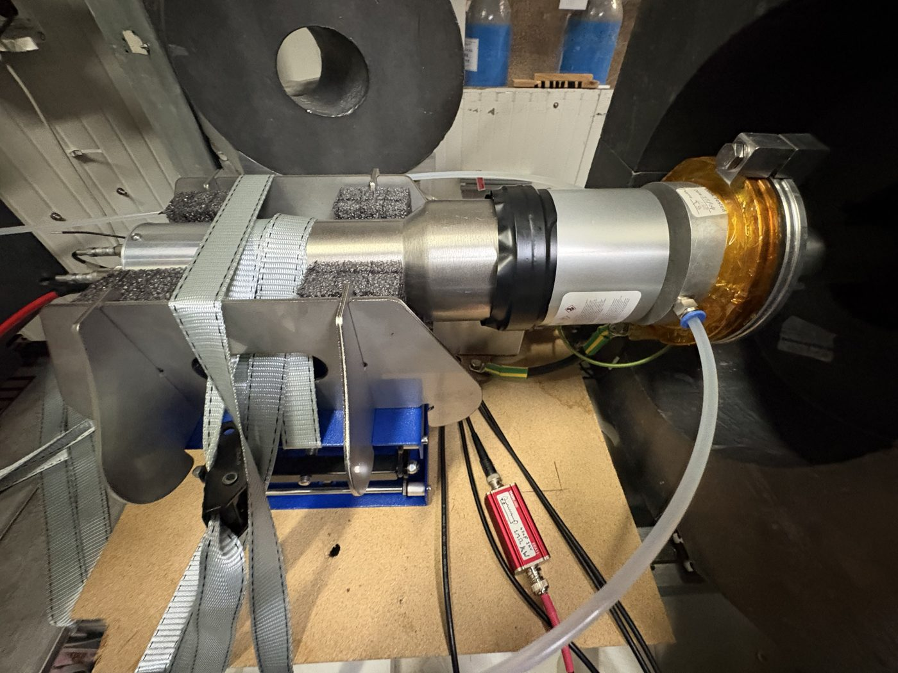

Neutron detectors
Direct neutron spectroscopy with EJ-301D
I set up direct neutron spectroscopy in the group from scratch, using deuterated liquid scintillators, so the activation results can be checked by a completely independent method. The work covers pulse-shape discrimination, detector response modelling, ambient-background measurements underground, and a full analysis pipeline with uncertainty estimates. The detectors are due to be used at LUNA.